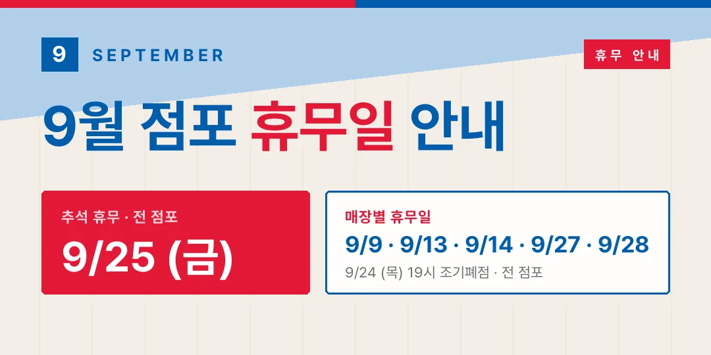

2026-08-27

9월 점포 휴무일입니다. 헛걸음하지 않도록 가려는 매장이 쉬는 날인지 미리 확인하세요.
9/25 (금) 추석 당일은 전 점포가 휴무이고, 9/24 (목)는 전 점포가 19시에 조기폐점합니다.
9/24 (목)
9/25 (금)
9/9 (수)
9/13 (일)
9/14 (월)
9/27 (일)
9/28 (월)
휴무일은 매장 사정에 따라 바뀔 수 있습니다. 방문 전 매장 공식 안내를 한 번 더 확인해 주세요.